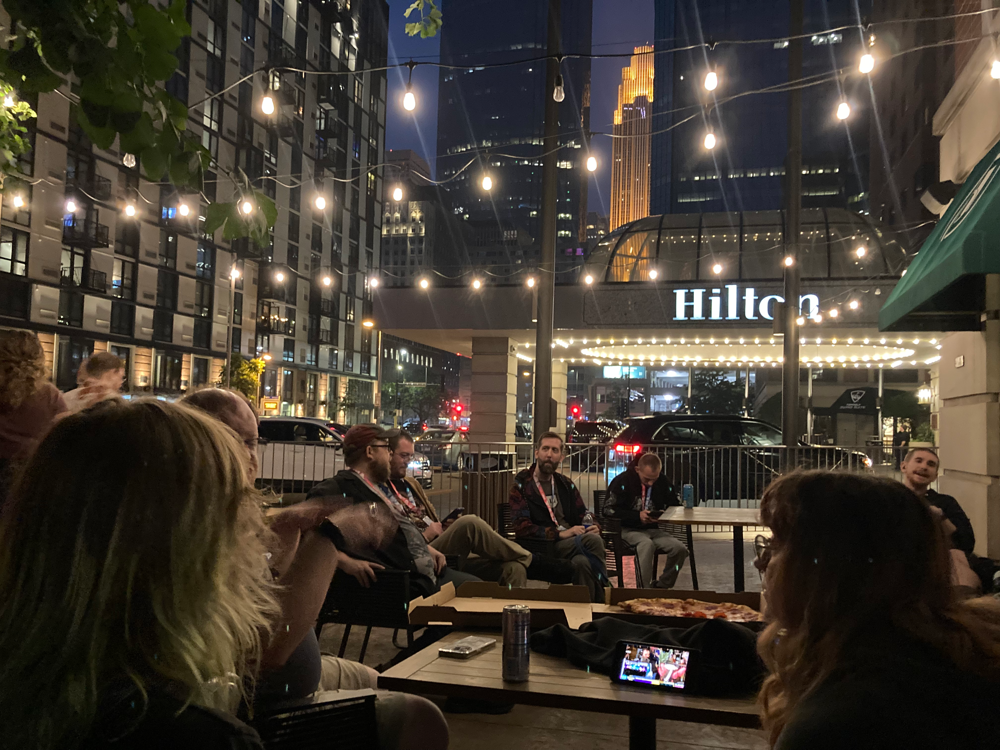
July 12th, 9:43 PM. The quiet night out.
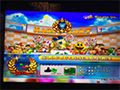
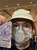
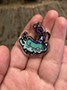
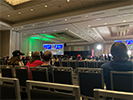
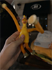
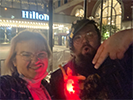
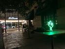
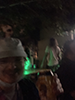
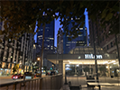
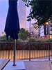
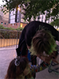
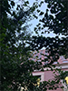
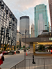
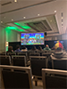
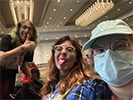
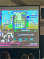
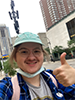
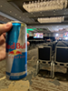
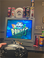
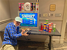
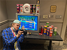
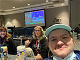
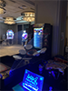
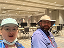
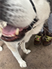
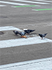
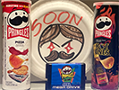
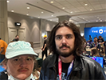
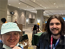
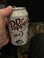
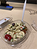
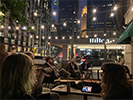
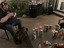
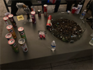
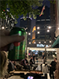
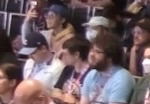
It all turned around because of GDQ Santa.
I didn't go to SGDQ wednesday afternoon. I think I was depressed, I think I was unhappy, I think I didn't have any energy. But I knew I wanted to make it work. So wednesday evening, I concocted a plan. I would head to GDQ at sundown, with my laptop in my backpack, and stay until sunrise. That was the silly block night, and I knew I wouldn't want to walk downtown Minneapolis in the extremely early morning back to my apartment. So I forced myself to be there, to enjoy myself. For about 10 hours.
I started off by watching the osulike speedrun, which was okay, I guess. I then moved to the practice room to charge my laptop and maybe get some IOOD devnotes work done. I sat across from a guy, who I now know as OceanBagel, and their friend, though I never got their name. OceanBagel was using an MX Master 2, and I'm a fucking walking advertisement for the MX Master 3S, so I went "holy shit, MX Master 2?", and OceanBagel went "yeah, horizontal scroll wheel", and then we talked for a bit and I moved to the other side of the table to watch them hunt for skips in Undertale. They then went off, and I went back upstairs, to watch some sort of run. And then I got really fucking exhausted, and nervous, and needed some fresh air. So I went outside onto the Hilton's no smoking patio.
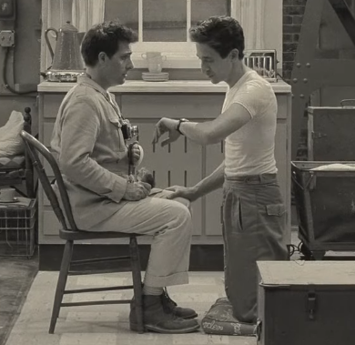
"I need a breath of fresh air."
"Oh, okay. But you won't find one."
I sat there, for a bit, with my backpack and hat off, just breathing. And then a guy walked over, proclaimed he was GDQ Santa, got a rubber chicken out of his bag, and gave it to me. We then talked for a bit, and he asked me if I wanted a beer. I don't know what compelled me to say yes — I've never drank before — but I accepted the offer, and he handed me a Voodoo Ranger. And we talked there, for a time. I drank the Voodoo Ranger, which was 7%, whatever that means, and could feel it! But I held steady, it's nothing I haven't been taught by years of psychiatric IV ketamine to hold.
Then some other people came, Pigeon and Morgan, and we talked there, for a time. And then Pigeon got out a gigantic notes list loose free-verse poetry thing from her phone, and gave it to Bonnie Dimples (GDQ Santa), and he read the whole thing. It took about twenty minutes. Then Pigeon and Morgan started smoking cigarettes, and weed. I don't know how the topic came up, but I've never smoked weed, and Pigeon said she wanted to be the person to "pop my weed cherry", which is kind of gross terminology, but, whatever, I got offered a blunt. And again, I don't what compelled me, but I said yeah. And I smoked it, twice and then third for good measure. Felt it slightly. Apparently I was a natural at smoking, it was really easy, just like breathing. Now that I've tried it, I don't feel compelled to try again, it's just fine.
We talked out there for hours. I met some other people, a homeless guy, and we stayed up through the night and into the morning. Pigeon and Morgan and I ran up the the third floor for the Nubby run, where we all cheered wildly, I became the fool the audience who was yelling and hollering. It was wonderful it was so joyful.
After so long, I finally felt like I had found my place in the world.
I headed home, slept through the midday, and showed up the next night. I watched a Geoguessr tournament, which a guy called Swooce won, and fucking by a large margin, he destroyed second place. I didn't know I could find "winning a Geoguessr tourney" attractive but Jesus Christ he fucking trounced the competition. It was crazy. I then saw Pigeon and Morgan showing up for their shift at World9 — they volunteered there, for free hotel stay and ticket reasons — and I handed them two Red Bulls I had snagged from the free Red Bull stations earlier in the night. The Red Bull stations don't get stocked in the evenings, and so the overnights at SGDQ mean "there's no Red Bulls", and I had failed to acquire a Red Bull with Pigeon that first morning. I watched them play Pikmin 3, right outside of the line that only staff could go across, and then got Pringles The Game'd, and then the Pringles Guy came around (Sex Rex or SecksWrecks? Don't know what it actually is), and I overheard him kind of give a testimonial on his GDQ life to a guy that was also playing the Pringle The Game game.
I left Pigeon and Morgan to watch the TMNT 2 run — it was run by a super Christian dude, and apparently there was a MAGA guy on the couch, slipped past the vetting process — with everybody gossipping about it, and with staff members in front of me in the audience. That was the most dead the crowd was, the entire event. Oh, and I watched the Xenoblade Chronicles Future Connected run, I'm visible in the audience. It was hype. Then ShadowInsignus showed up to see Pigeon and Morgan, and thus I met him, and he's a really cool guy, it turns out! I don't think I made any sort of impression on him but I think he's really fucking cool. He also met Pigeon and Morgan by hanging out with the "degenerates" (everybody who hangs out at the no smoking patio, which is the smoking patio, it turns out). We huddled around the World9 laptop and looked at the GDQ donation lottery tracker. And idk. I felt something there. I felt like, part of something, some great web that connected everyone and everything there. I felt like I had found it, and was with them, and that was my most content moment.
After Pigeon and Morgan's shift ended, them and I went outside, them to smoke, me to talk. And then Elipsis came by, another "degen", and they did shots in celebration of them doing a speedrun earlier (I think also because the shift ended). Elipsis asked if I wanted a shot, and I went "is that okay?", and Pigeon sort of jokingly responded like "of course that's okay", or something. And then I had a shot with them. It was a Captain Morgan Spiced Rum, in an off-brand solo cup. A mouthful. It fuckin', damn, it was spiced! I coughed after. I then went up alone to the arcade, and played some Initial D Arcade Stage 8 Infinity (Pigeon's recommendation), and waited until 10AM, when the vendor hall opened. When it did, I bought a Monado pin, then went back to my apartment, and wentttt to beddddd.
I then woke up at like 4AM, helped my non-GDQ friend Dahlia with a grocery run, and THEN headed to GDQ. I watched a Rivals 2 Tourney, walked around the arcade game area, and went to the third floor, not to watch runs in the room where it happens, but to play game demos. I tried Crokinole Chaos, a Crokinole one, and also then learned what Crokinole is and how to play it. After that, I tried a rhythm game I didn't like, then I tried a game called Kila Flow which, uh. I kind of hated. It was pretty okay, but the level design didn't meld with the movement system, and I kind of argued with the dev there that they either needed to change a level's design or add a tutorial for an unexplained core feature, because the second boss fight was just impossible without either of those solutions. I just started repeatedly trying the impossible jump and dying while they explained they wouldn't because of their design philosophy. It was, triggering, I guess. I hated the protagonist's big booty thick protogen design, too, I hate protogens, and I hate 2D art in the style of that fucking digital raccoon from that theme park game. And I fucking hated the primary font! It's such a terrible font! I have become so opinionated on fonts after looking at so many for IOOD. Whatever. 34k on Kickstarter, I guess. I have a new game I HAAAATTEEEEEE.
But I also have a new game I love. Right next to that booth was the booth for Inpulse. Made by Anon/Nate. I sat down to play it and ended up playing it for 90+ minutes. I colonized the left side of the booth. It's a kaizo game, apparently, and I've never played one of those before. So I hit roadblocks, early, and I would go "I refuse to be filtered", and then I'd spend 10 minutes and clear them. And then pressed Spacebar accidentally, and activated the dev level editor, because Anon/Nate apparently forgot some flags on some levels, and we had some fun jokes and japes with that. And Anon/Nate was like "dude what's your primary game" and my answer was, like, ARPGs or Hello Kitty Island Adventure. He was shocked I had never played a kaizo game. He gave a Diet Dr Pepper for clearing a level nobody else had at GDQ. He let me play "the cube", which was intensely difficult even for experienced kaizo players, and I got five jumps in. He put a video of me playing in the "kaizo discord", of which there are many, apparently, and kept saying proper nouns that were reacting to me. He started bragging to other booths that I was so good at kaizo games despite having never played one before, and people would be like "what? Dude what do you play", and I would just say "lol Hello Kitty Island Adventure". I was, like, a show horse, it was the most Y/N thing that happened to me all weekend. But fuck, the game was so good. I sat there with Nate/Anon and played it so much. I bought a hoodie with the game's logo on it. Nate/Anon is really cool, too. It was awesome. I was entranced. I wish I had talked more rather than just, fucking, gaming and saying "I didn't save Friendship Island for nothing", I still don't know his deal with Croatia.
I then hung out with Pigeon and Morgan in the practice room some more, while they played LittleBigPlanet, and then I played some more Pringles as the practice room was closing. Then I met up with Nicholas to watch Mario Kart World (who I never ended up taking a selfie with 😔), and then I went outside to leave and ended up meeting Pigeon and Morgan and Bonnie on the way out. I drank a 7Up with them as they smoked, with the crowd, before starting to get a slight headache. And at that moment, at the end of SGDQ, I knew my time was up. I had made it my own, I had lived with joy and happiness, and it was time to go, and I was so happy to. I hugged them, and waved bye to them, and had a Beer Can Chicken Pringle, and jumped while saying bye, actually. And then left.
And that was it for SGDQ 2025. I'm so glad I went out for air.